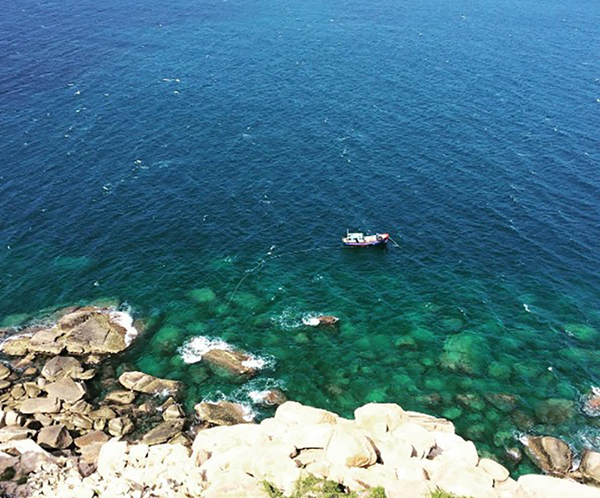
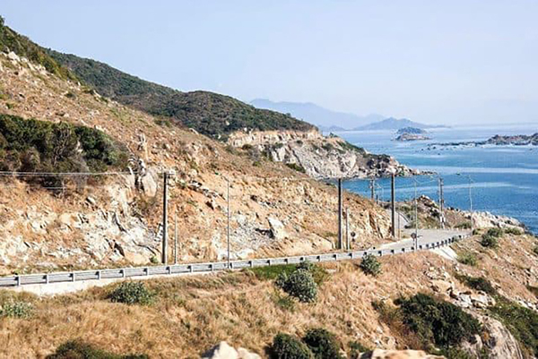
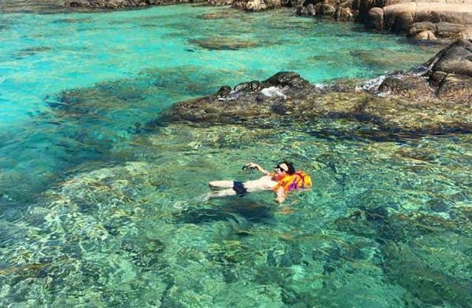
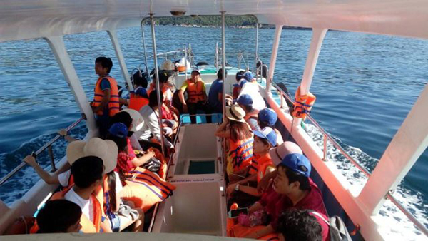
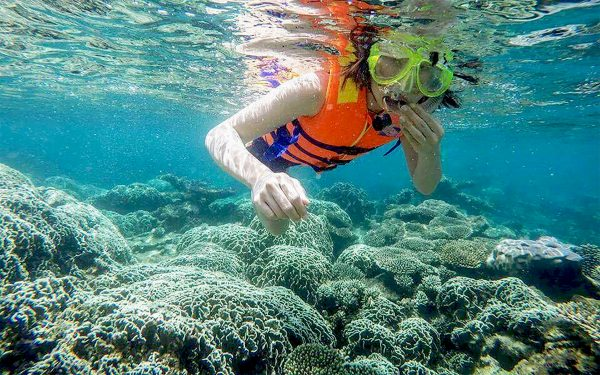
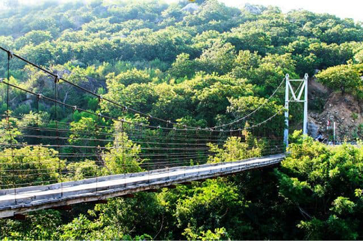
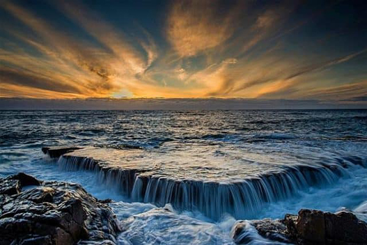

Vịnh Vĩnh Hy được đánh giá là một trong bốn vùng vịnh đẹp nhất Việt Nam. Vậy địa điểm du lịch nổi tiếng này có gì thu hút và hấp dẫn khách du lịch đến vậy?

Vịnh Vĩnh Hy chắc chắn là một điểm đến không thể bỏ qua khi nhắc đến du lịch Ninh Thuận. Vịnh Vĩnh Hy nằm ở phía Đông Bắc của tỉnh Ninh Thuận,
cách thành phố Phan Rang khoảng 40km. Thuộc xã Vĩnh Hải, huyện Ninh Hải, gần vùng biển Ninh Chữ thơ mộng.
Vịnh Vĩnh Hy được bao bọc bởi ba mặt rừng núi nên nhìn chung vùng vịnh này biển khá lặng và yên bình quanh năm.
Thời tiết tại đây ôn hòa và dễ chịu, vì thế bạn có thể đi du lịch Vĩnh Hy bất cứ thời điểm nào trong năm.
Tuy nhiên, theo kinh nghiệm du lịch Vĩnh Hy tự túc của Vntrip.vn thì thời điểm lý tưởng nhất để đến Vịnh Vĩnh Hy là tầm tháng 5 đến tháng 8.
Lúc này biển Vĩnh Hy đẹp tuyệt vời, làn nước trong vắt màu xanh ngọc có thể nhìn thấy đáy, sóng yên biển lặng.

Nếu đi từ thành phố Phan Rang, bạn có thể bắt xe buýt để tới thẳng Vịnh Vĩnh Hy. Các tuyến xe ở đây chạy khá nhiều và đều đặn trong ngày. Bạn hãy chọn lộ trình tuyến xe phù hợp với thời gian của mình nhé.
Từ Cam Ranh tới Vĩnh Hy khoảng 40 km. Bạn thuê ôtô hoặc xe máy ở Cam Ranh sau đó chạy theo quốc lộ 1A về phía Nam. Đến ngã ba giao với tỉnh lộ 702 thì bạn rẽ trái chạy thẳng là tới Vịnh Vĩnh Hy. Con đường này còn đi ngang qua bãi biển Bình Tiên cũng rất nổi tiếng và thơ mộng.
Cách thức thuê thuyền này phù hợp với những team đi từ sân bay Cam Ranh. Từ sân bay bạn di chuyển đến cầu Mỹ Thanh (TP.Cam Ranh), rồi đi theo hướng Bình Tiên – Vĩnh Hy. Khi tới cảng, bạn sẽ thuê thuyền để ra tham quan vịnh. Nếu nhóm đi đông thì bạn thuê tàu riêng còn đi ít thì có thể ghép thêm người.

Điều đầu tiên mà bạn nên trải nghiệm khi đi biển chính là tắm biển rồi phải không? Còn gì thích thú hơn khi được hòa mình vào làn nước biển mát lạnh, trong xanh,
thỏa sức bơi lội đùa nghịch dưới nước. Tiếp đến là đi dạo trên bãi cát trắng mịn trải dài.
Thả hồn vào khoảng không gian yên bình, tĩnh lặng, chỉ có tiếng sóng biển vỗ rì rào.

Đến Vịnh Vĩnh Hy, bạn có thể đặt tour với tàu ngay tại vịnh và nên đi đông khoảng trên 10 người thì giá sẽ rẻ hơn. Còn nếu ít người thì cần thỏa thuận giá
cả một chút với bên tour. Từ trên tàu, bạn có thể thư giãn câu cá hay ngắm những rặng san hô lấp lánh dưới nước qua đáy tàu làm bằng kính trong suốt.

Lặn biển ngắm san hô chính là hoạt động dưới biển mà bạn nhất định không thể bỏ qua khi đi du lịch Vịnh Vĩnh Hy nhé. Chỉ cần một chiếc kính lặn và
ống thở là bạn đã có thể khám phá cả một thế giới đầy màu sắc dưới biển. Thỏa thích bơi cùng những chú cá và chiêm ngưỡng vẻ đẹp lộng lẫy của rừng
san hô đang đung đưa dưới nước.

Từ Vịnh Vĩnh Hy bạn đi khoảng 15 phút qua cây cầu treo là sẽ tới được vườn quốc gia Núi Chúa. Tại đây bạn sẽ được tìm hiểu về thảm động thực vật đa dạng, phong phú.
Tận hưởng không khí trong sạch, không bụi bặm, vô cùng sảng khoái của núi rừng. Cảm nhận thế giới tự nhiên trọn vẹn bởi rừng cây phủ xanh, dòng suối mát lành.

Đã đến Vịnh Vĩnh Hy mà không ghé thăm Hang Rái thì bạn sẽ tiếc cả đời cho xem! Tại sao ư? Vì đây là một nơi tuyệt đẹp dù là để ngắm cảnh tham quan
hay chụp ảnh checkin. Tên gọi “Hang Rái” xuất phát từ hai lý do, một là ngày xưa nơi này có rất nhiều rái cá, hai là nơi đây có nhiều cây rái, loại
chiết lấy dầu sơn tàu thuyền để chống thấm.